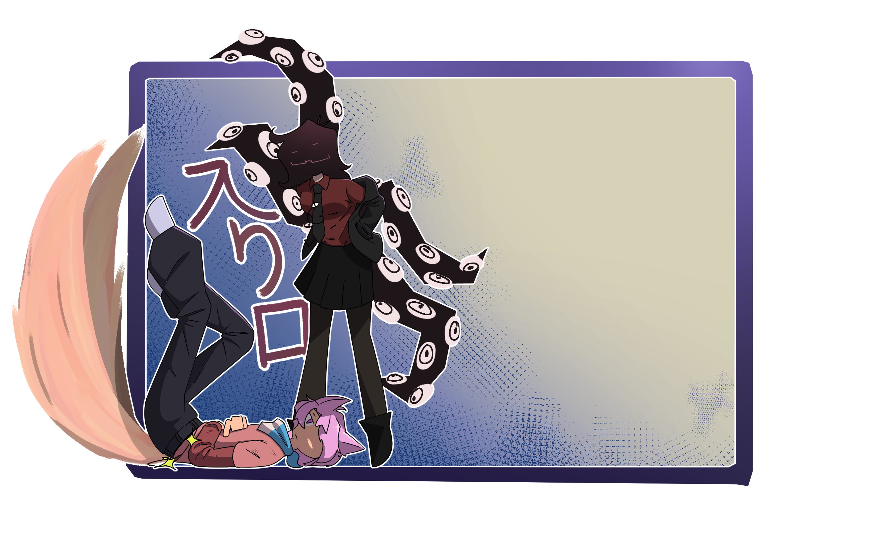

I made this site to learn how to make a website, as a plus this whole site is based on my stuff so you get to see all the shenanigans I do!!
If you don't mind swearing, or any other crude stuff I may joke or say, then come right in!
- KeitaroYosh